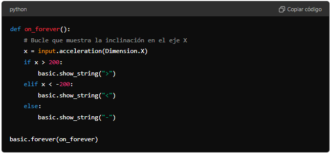
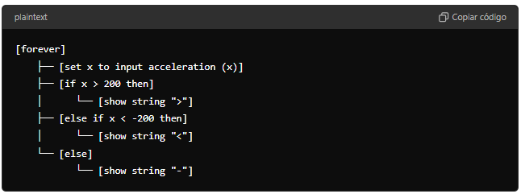
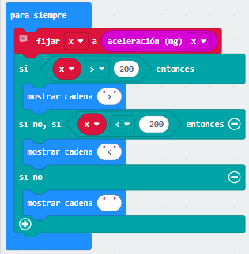

1. Acelerómetro
Planteamiento del problema
Queremos crear un programa en la micro:bit que lea la inclinación en el eje X utilizando el acelerómetro. Si la inclinación es mayor a 200, se mostrará ">" en la pantalla LED; si es menor a -200, se mostrará "<"; y si está entre -200 y 200, se mostrará "-". Este proceso debe repetirse continuamente.
Solución con MICROPYTHON
Código en Python para micro:bit:
Explicación del código en Python:
- Obtener la inclinación en el eje X:
X = input.acceleration(Dimension.X)Lee el valor de la aceleración en el eje X y lo almacena en la variablex. - Condicionales para mostrar símbolos:
if x > 200:Muestra">"elif x < -200:Muestra"<"else:Muestra"-"
- Ejecución continua:
basic.forever(on_forever)Hace que la micro:bit revise continuamente la inclinación y muestre el símbolo correspondiente.
Solución con MAKECODE
Estructura visual del código en MakeCode:
Explicación Detallada del Código:
1. Bloque "para siempre"
-
Ubicación:
- Este bloque se encuentra en la categoría "Básico".
- Está ubicado en la parte superior de la lista de bloques.
-
Función:
- Este bloque es un bucle infinito que ejecuta repetidamente cualquier código que se coloque dentro de él. En este caso, se usa para medir continuamente la aceleración en el eje X y mostrar la inclinación de la micro en la pantalla LED.
2. Bloque "fijar x a aceleración (mg) en X"
-
Ubicación:
- Este bloque se encuentra en la categoría "Variables" y la categoría "Entrada".
- Primero debes crear la variable
xen la categoría "Variables". - Luego, arrastra el bloque "fijar [variable] a [valor]" y selecciona "aceleración (mg) en X" de la categoría "Entrada".
-
Función:
- Este bloque mide continuamente la aceleración en el eje X utilizando el acelerómetro integrado en la micro y almacena ese valor en la variable
x. El valor de la aceleración se expresa en miligramos (mg) y se utiliza en los siguientes bloques condicionales para determinar la inclinación de la micro.
- Este bloque mide continuamente la aceleración en el eje X utilizando el acelerómetro integrado en la micro y almacena ese valor en la variable
3. Bloque "si... entonces"
-
Ubicación:
- Este bloque se encuentra en la categoría "Lógica".
- Al abrir la categoría "Lógica", encontrarás el bloque "si... entonces" y "si... entonces... si no".
-
Función:
- Este bloque permite ejecutar ciertas acciones solo si se cumple una condición específica. En este caso, se comparan los valores de la variable
xpara determinar cómo está inclinada la micro.
- Este bloque permite ejecutar ciertas acciones solo si se cumple una condición específica. En este caso, se comparan los valores de la variable
4. Condiciones en el Bloque "si... entonces"
-
Condición 1:
- Si
x > 200entonces:- Bloque involucrado:
x > 200: Comparación que verifica si la micro está inclinada hacia adelante (aceleración positiva en el eje X).
- Función: Si se cumple esta condición, el bloque "mostrar cadena '>'" se ejecuta, mostrando el símbolo ">" en la pantalla LED para indicar inclinación hacia adelante.
- Bloque involucrado:
- Si
-
Condición 2:
- Si no, si
x < -200entonces:- Bloque involucrado:
x < -200: Comparación que verifica si la micro está inclinada hacia atrás (aceleración negativa en el eje X).
- Función: Si se cumple esta condición, el bloque "mostrar cadena '<'" se ejecuta, mostrando el símbolo "<" en la pantalla LED para indicar inclinación hacia atrás.
- Bloque involucrado:
- Si no, si
-
Condición 3:
- Si no:
- Función: Si ninguna de las condiciones anteriores se cumple, significa que la micro está en posición neutral (aceleración en el eje X cercana a 0). Se ejecuta el bloque "mostrar cadena '-'", mostrando el símbolo "-" en la pantalla LED.
- Si no:
5. Bloque "mostrar cadena"
-
Ubicación:
- Este bloque se encuentra en la categoría "Básico".
- Al abrir la categoría "Básico", encontrarás el bloque "mostrar cadena".
-
Función:
- Muestra una cadena de texto en la pantalla LED de la micro. En este programa, se usa para mostrar un símbolo ("<", ">", "-") que indica la inclinación de la micro.
Resumen del Flujo del Programa:
-
Medición Continua de la Aceleración:
- La micro mide constantemente la aceleración en el eje X utilizando su acelerómetro integrado. El valor medido se guarda en la variable
x.
- La micro mide constantemente la aceleración en el eje X utilizando su acelerómetro integrado. El valor medido se guarda en la variable
-
Determinación de la Inclinación:
- El programa utiliza bloques condicionales para comparar el valor de
xcon ciertos umbrales (200 y -200) para determinar si la micro está inclinada hacia adelante, hacia atrás, o si está en posición neutral.
- El programa utiliza bloques condicionales para comparar el valor de
-
Visualización de la Inclinación:
- Dependiendo de la inclinación, el programa muestra un símbolo en la pantalla LED:
- ">": Indica que la micro está inclinada hacia adelante.
- "<": Indica que la micro está inclinada hacia atrás.
- "-": Indica que la micro está en posición neutral.
- Dependiendo de la inclinación, el programa muestra un símbolo en la pantalla LED:
Este código es un excelente ejemplo de cómo utilizar el acelerómetro de la micro para detectar y mostrar la inclinación del dispositivo en tiempo real. Es ideal para aprender a trabajar con sensores y a interpretar sus lecturas para generar respuestas visuales en la pantalla LED de la micro.
Apoyo visual
